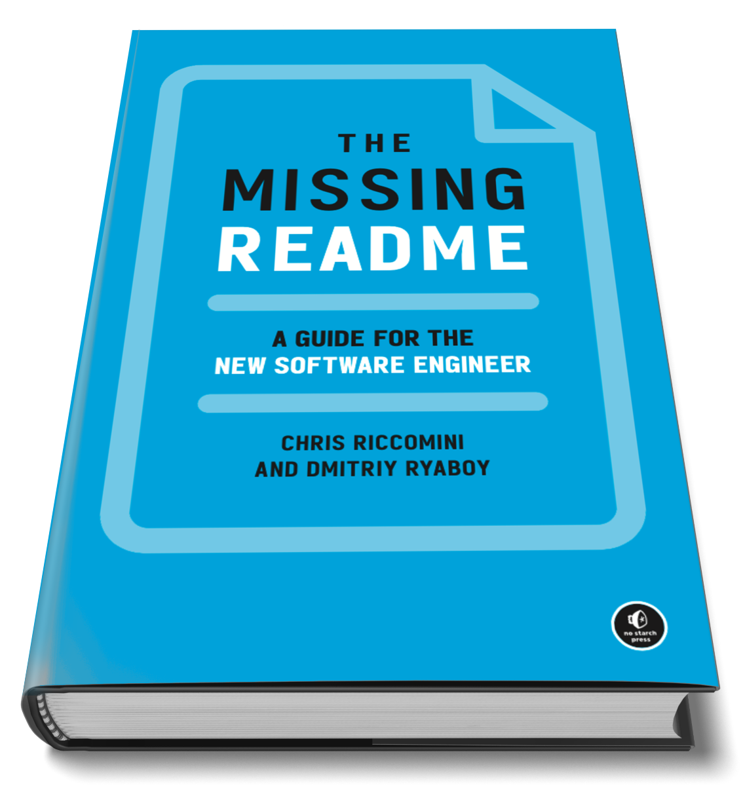

The Missing README
teaches you the software engineering skills that your manager wants you to know, the ones not taught in school.
Working with
existing code
Writing
maintainable and operable
code
Managing
software dependencies
Testing, reviewing, building, deploying, and operating
code
Going
on-call
Creating
evolvable software
Designing and planning
software projects
Working with
your manager
Navigating
your career
Testimonials
Alejandro Crosa, CTO at Silverback Ventures, former Staff Engineer at Slack
I won’t get tired of recommending this book.
About the Authors
Stay in Touch